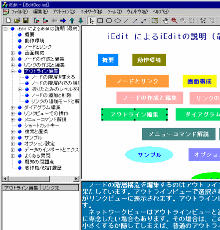
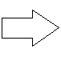
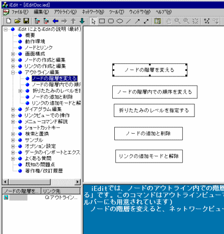

iEdit は３つのペインからなる子ウィンドウを持つ、MDI(Multi Document Interface) のアプリケーションです。複数のファイルをオープンして編集できます。１つのファイルは３つのペインで分割された４つのビューで表されます。ペインの大きさ、位置はマウスにより調整可能で、調整した結果を次回の起動時に再現することも可能です。
iEdit は４つのビューからなり、それぞれ連携してアイデアプロセッシングを支援します。
アウトラインビューは、ツリービューです。ツリー上にノードの階層的な関係が表示されます。ノードの階層を上げ下げしたり、同じ階層内での順序を変えたりできます。また、ツリーアイテムのラベルを直接編集することもできます。ツリーアイテムのラベルを変更すると、ネットワークビューにおけるノードのラベルも更新されます。 アウトラインビューは iEdit ドキュメント内のすべてのノードにアクセスできるナビゲータの役割とどのノードが選択されているのかという状態を管理する役割を果たしています。
リンクビューは、ノードとノードの関連であるリンクの一覧を表示するペインです。アウトラインビューで選択されているノードに関連するリンクをリスト表示します。
ネットワークビューは、右上のペインであり、ノードの階層的な関係ではなく、二次元的な関係を表現します。ネットワークビューの操作は、簡単なドローイングソフトのようになっています。
テキストビューは右下のペインです。ここには、ノードに属するテキストが表示され、編集することができます。テキストエディターとしての機能はメモ帳と同じです。
iEdit では、アウトラインビューで選択されているノードに関する情報が各ビューに表示されます。ネットワークビューではアウトラインビューで選択されているノードと同じ階層のノードだけが表示されます。テキストビューでは、選択中のノードのテキストが表示され編集可能になります。
|  |  |  |
「アウトライン編集」と同じ階層のノードがネットワークビューに表示されています。 |
「アウトライン編集」の子階層のラベルがネットワークビューに表示されています。 |
アウトラインビューで選択されているノードの配下のビューを全て表示させることが出来ます。この機能により、異なる階層のノードであっても階層の違いを気にすることなくネットワークビューにおいて、自由に編集を行うことができます。
通常では、同一階層のノードがネットワークビューに表示されます。下の例では、「inode」と「ilink」が同じ階層にあるため、この2つが表示されてます。
「選択したノード配下のノードを全て表示」コマンドで、アウトラインビューの選択ノードが黄色にマークされ配下のノードがネットワークビューにすべて表示されます。下図では、「id」、「pid」・・・「nodeLineColor」など、「inode」の直接の子階層だけでなく、「l_red」、「l_green」など「inode」の直接子階層でないノードもすべて表示されます。
「選択したノード配下の子ノードを表示」コマンドで、アウトラインビューの選択ノードが緑色にマークされ子階層のノードがネットワークビューにすべて表示されます。下図では、「id」、「pid」・・・「nodeLineColor」など、「inode」の直接の子階層のノードのみが表示され、「l_red」、「l_green」など「inode」の直接子階層でないノードは表示されていません。
（実装してから気づいたのですが、 この機能は、通常のモードで子階層に下がったのと変わりないという噂があります。(^_^;))
なお、これらのモードは「すべて表示モードを解除」コマンドを選択するか、サブツリー以外のノードを選択すれば通常に戻ります。